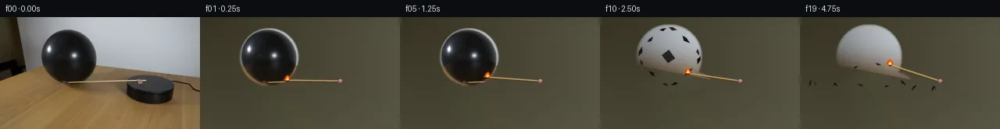

![首帧]()

Round 00
2026-11-05T03:25:37.871054+00:00像素候选变化代码 +293/−0inspection 更新
pixels 1e92f9a894111c72 · code 35be8e1121ff1630
查看本轮 generate.py 真实 diff
--- previous/generate.py +++ current/generate.py @@ -0,0 +1,293 @@ +#!/usr/bin/env python3 +"""Generate a 20-frame fixed-camera match-and-balloon demonstration. + +Only first_frame.png is used as image input. The balloon removal plate is made +with local polynomial background reconstruction plus OpenCV inpainting; all +moving elements are analytic PIL/numpy drawings. +""" +from pathlib import Path +import math + +import cv2 +import numpy as np +from PIL import Image, ImageDraw, ImageFilter, ImageFont + +import artifact_io + + +ROOT = Path(__file__).resolve().parent +W, H = 256, 144 +SCALE = 4 + + +def ellipse_mask(cx, cy, rx, ry, feather=0.0): + yy, xx = np.mgrid[:H, :W] + d = ((xx - cx) / rx) ** 2 + ((yy - cy) / ry) ** 2 + if feather <= 0: + return (d <= 1).astype(np.uint8) * 255 + return np.uint8(np.clip((1 + feather - d) / feather, 0, 1) * 255) + + +def make_plates(src): + """Return plates with the old match removed and with balloon also removed.""" + # Narrow old-shaft mask, stopping just before the pink mounting clip. + shaft_mask = np.zeros((H, W), np.uint8) + cv2.line(shaft_mask, (107, 82), (176, 81), 4, 255, cv2.LINE_AA) + shaft_mask = cv2.dilate(shaft_mask, np.ones((3, 3), np.uint8)) + no_arm = cv2.inpaint(src, shaft_mask, 4, cv2.INPAINT_TELEA) + + # Restore the original balloon proper on the pre-pop plate. This also + # protects its antialiased boundary from the shaft cleanup. + balloon_core = ellipse_mask(88, 51, 36.5, 36.0, feather=0.12) + alpha = balloon_core[..., None].astype(np.float32) / 255 + no_arm = np.uint8(np.clip(no_arm * (1 - alpha) + src * alpha, 0, 255)) + + # The post-pop inpaint covers the balloon and its broad tabletop shadow. + remove = np.zeros((H, W), np.uint8) + cv2.ellipse(remove, (88, 51), (39, 39), 0, 0, 360, 255, -1, cv2.LINE_AA) + cv2.ellipse(remove, (91, 83), (48, 13), 0, 0, 360, 255, -1, cv2.LINE_AA) + remove = cv2.dilate(remove, np.ones((5, 5), np.uint8)) + post = cv2.inpaint(no_arm, remove, 7, cv2.INPAINT_TELEA) + + # Reconstruct the wall portion from a robust quadratic fit to surrounding + # wall pixels. It prevents a large round inpaint swirl where the balloon + # used to be while retaining the source's left-to-right light gradient. + yy, xx = np.mgrid[:H, :W] + horizon = 52.4 + 0.196 * xx + valid = (xx >= 27) & (xx <= 232) & (yy >= 4) & (yy < horizon - 4) + valid &= remove == 0 + valid &= np.mean(src, axis=2) > 75 + xv, yv = xx[valid] / W, yy[valid] / H + design = np.c_[np.ones(xv.size), xv, yv, xv * xv, xv * yv, yv * yv] + target = src[valid].astype(np.float64) + coef, *_ = np.linalg.lstsq(design, target, rcond=None) + xa, ya = xx / W, yy / H + all_design = np.stack([np.ones_like(xa), xa, ya, xa * xa, xa * ya, ya * ya], -1) + fitted = np.clip(all_design @ coef, 0, 255) + + wall_hole = (remove > 0) & (yy < horizon) + # Add restrained deterministic sensor texture copied from a clean wall row. + rng = np.random.default_rng(114) + noise = rng.normal(0, 1.15, (H, W)) + noise = cv2.GaussianBlur(noise, (0, 0), 0.7)[..., None] + fitted = np.clip(fitted + noise, 0, 255) + post[wall_hole] = fitted[wall_hole].astype(np.uint8) + + # Feather only the generated outer boundary; object overlays remain crisp. + soft = cv2.GaussianBlur(remove, (0, 0), 1.2)[..., None].astype(np.float32) / 255 + post = np.uint8(np.clip(no_arm * (1 - soft) + post * soft, 0, 255)) + return no_arm, post, remove + + +def add_glow(frame, x, y, strength, radius=8.0): + yy, xx = np.mgrid[:H, :W] + g = np.exp(-((xx - x) ** 2 + (yy - y) ** 2) / (2 * radius * radius)) + g = (g * strength)[..., None] + warm = np.array([52.0, 22.0, 2.0])[None, None, :] + return np.uint8(np.clip(frame.astype(np.float32) + g * warm, 0, 255)) … diff truncated; 206 more lines …